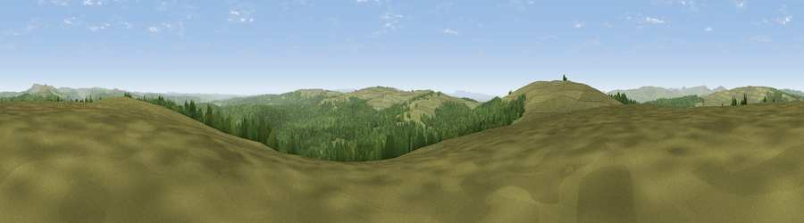

Viewpoint c11750_7179
#5174 in England · top 8% of its area beats it · —Where it is
The exact computed spot (NY 58975 87525). Click the marker for map links.
The view, rendered

A 360° render of this exact spot computed from the terrain model, tree cover and land cover — summer colours, afternoon light, calibrated against photographs of famous viewpoints. Real trees, hedges and buildings will differ in detail.
The panorama
Grey silhouette: terrain skyline in each direction (720 bearings, Earth curvature and refraction included). Dashed green: skyline with trees (+15 m) and buildings (+8 m) as obstacles. Blue strip: how far the ground is visible on each bearing.
Where the view opens
Wedge length = distance to the farthest visible ground on that bearing (vegetation-aware). Rings at 10, 25 and 50 km.
What fills the view
51% grassland · 48% woodland
Angular shares of the visible panorama (visual magnitude), not map area. Landscape diversity 0.31 (0–1 Shannon).
Key numbers
More beautiful places nearby
The staircase of upgrades: each row has a higher view potential than everything closer. Driving times are estimates from straight-line distance, calibrated against real road routing — check an actual route before setting out.
| Place | Direction | Drive | Score |
|---|---|---|---|
| Glendhu Hill | WSW · 3 km | ~6 min | 74.9 |
| Viewpoint c11644_7156 | SSW · 5 km | ~12 min | 80.8 |
| Viewpoint c11995_7247 | NNE · 13 km | ~24 min | 82.1 |
| Viewpoint c12273_7856 | NE · 43 km | ~62 min | 83.7 |
| Viewpoint c12396_7887 | NE · 48 km | ~69 min | 85.7 |
| Viewpoint near Kirknewton | NE · 54 km | ~75 min | 86.1 |
| Viewpoint near Chillingham | NE · 62 km | ~84 min | 88.1 |
| Ullock Pike | SSW · 68 km | ~91 min | 89.4 |
55.18030, -2.64575 · source: screening · position refined by local search. Computed location — check access rights before visiting.